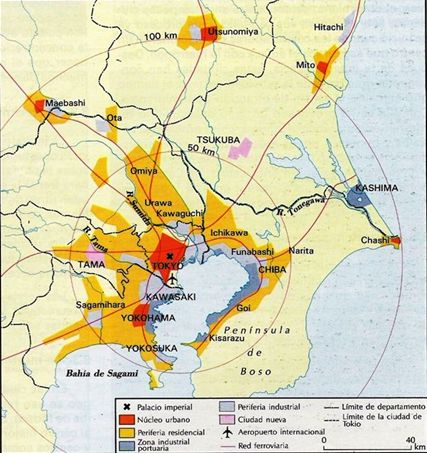
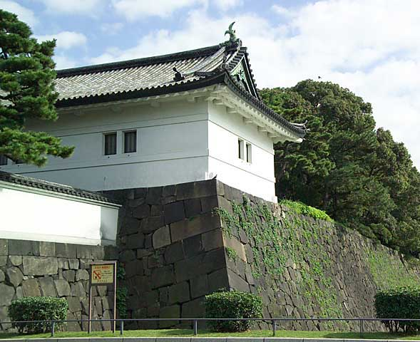

Vista así, esta imagen de Tokio podría pertenecer a cualquier gran ciudad de Norteamérica o Europa, pero es que las modernas ciudades japonesas, en cuanto a su morfología y tipo de edificios, participan de los mismos rasgos que las europeas.
La tasa de urbanización japonesa es de las más altas del mundo y, si recuerdas, el área metropolitana de Tokio es en la actualidad el espacio urbano más poblado del planeta.
Esta elevada concentración de población urbana hace que la vida en las ciudades japonesas sea un tanto estresante. Pese a que Japón cuenta con los medios y vías de transporte más modernos, la contaminación y la congestión del tráfico son serios problemas en sus grandes ciudades.
Si tenemos en cuenta que Japón tiene poco más de 127 millones de habitantes, y que en las dos áreas metropolitanas de Tokio y Osaka viven más de 52 millones de personas, puedes hacerte una idea de lo concentrada que está la red urbana japonesa, ya que más del 40% de la población japonesa se concentra en dos megalópolis. Observa en el mapa que tienes a continuación que el radio de influencia de la ciudad de Tokio se extiende hasta casi 100 kilómetros del centro urbano.
Pese a la modernidad aparente de las grandes ciudades japonesas, el pasado de algunas de ellas es milenario, y todavía conservan rincones que nos recuerdan que la cultura tradicional japonesa es de las más antiguas del mundo, y bastante diferente a la nuestra.
